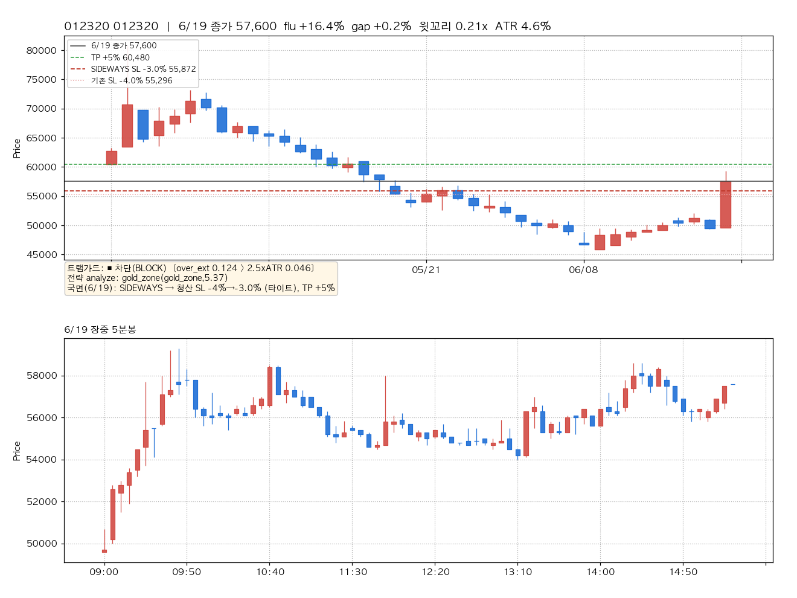
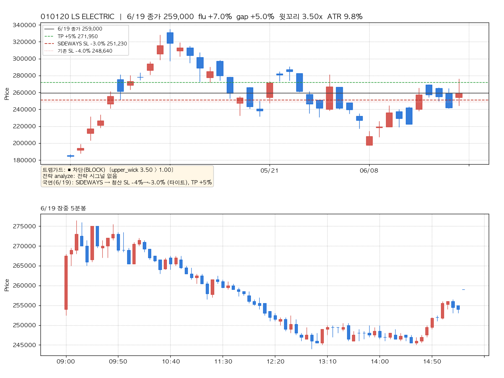
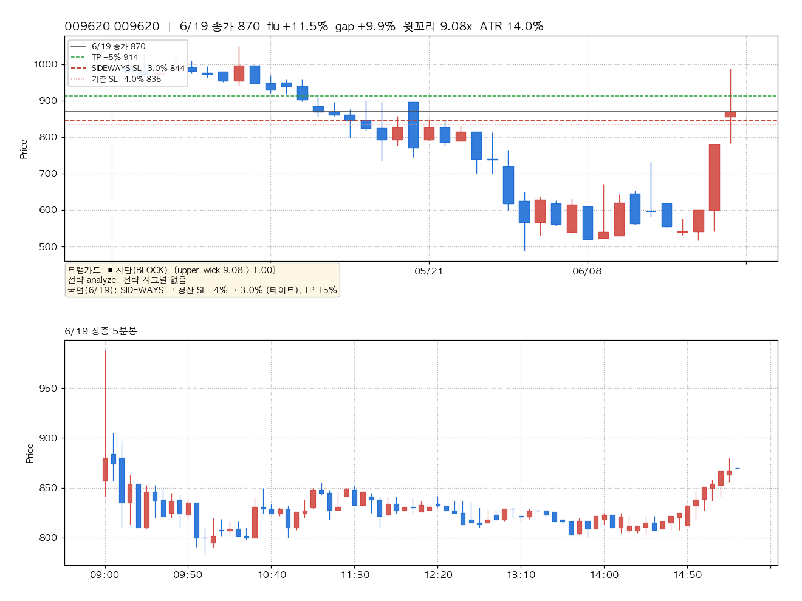
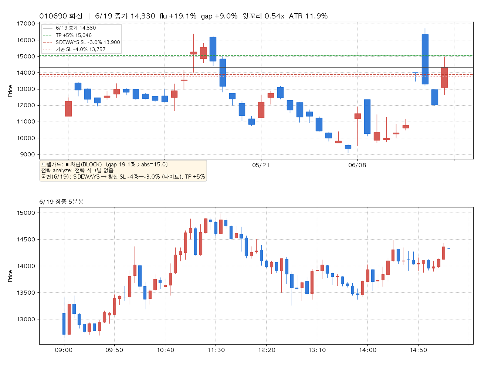
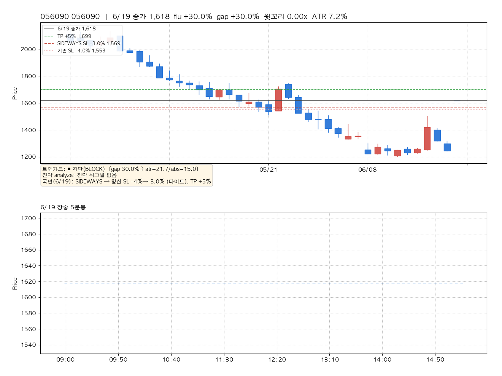
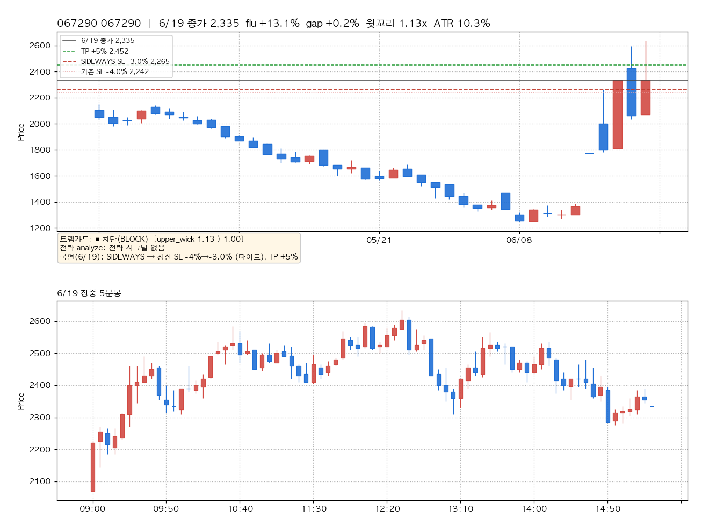
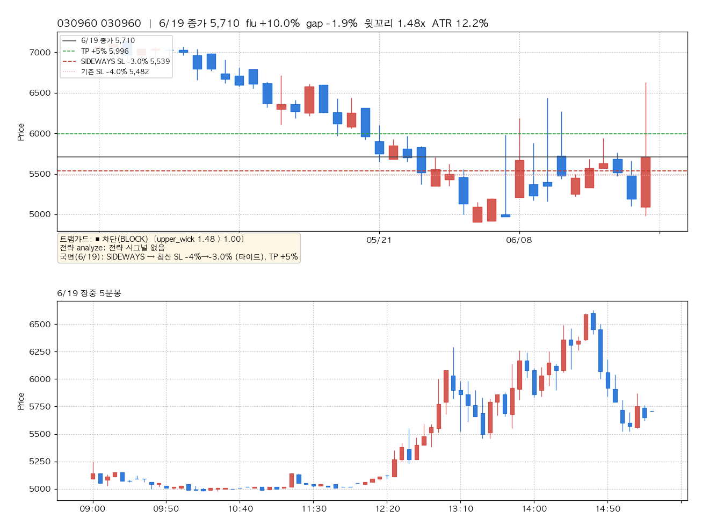
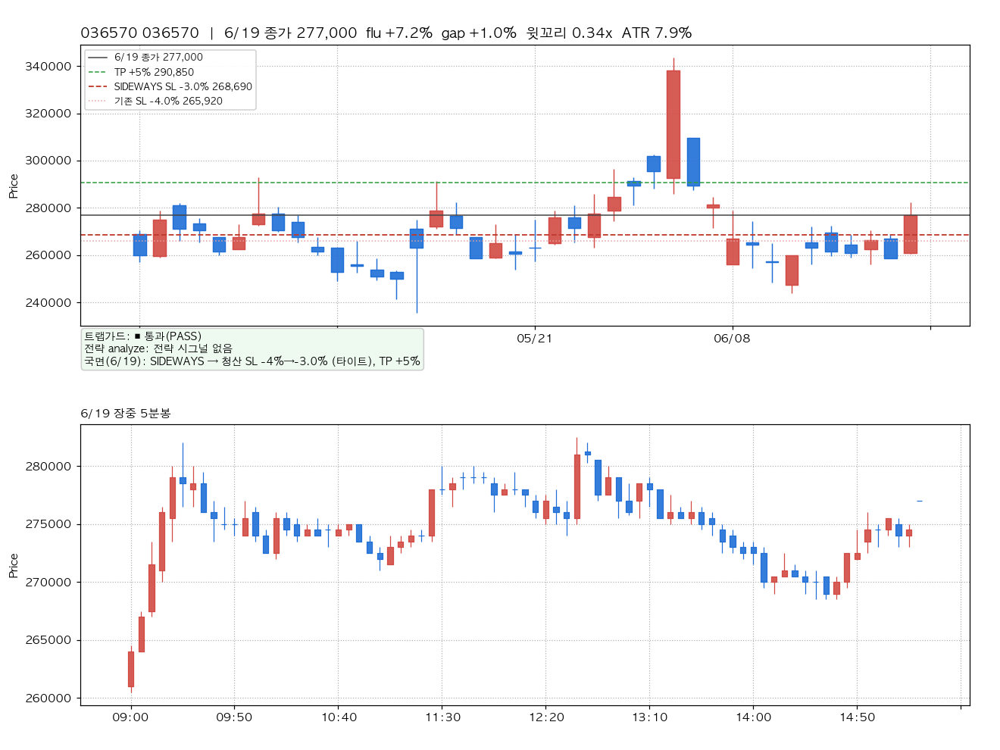

Project: BarroAiTrade · Date: 2026-06-21 · 대상 거래일: 2026-06-19 · Status: Final (시뮬레이션 — 실거래 무영향) 목적: 신규 구현된
trap_guard(진입 가짜돌파 차단) +regime_exit(국면 적응 청산) 로직을 6/19 실측 캔들에 적용해 "매매시그널 기준"으로 시뮬레이션하고, 종목별 차트로 검증. 연관: [[2026-06-21-tp-sl-exit-logic.report]] ·backend/core/strategy/trap_guard.py·backend/core/risk/regime_exit.py
6/19 고갭·장대양봉 무버 8종목 중 7종목을 트랩가드가 차단, 정상 셋업(대조군 1종)만 통과. 특히 gold_zone이 실제 매수 시그널을 낸 종목(012320)을 "과확장 추격"으로 차단 — 6월 반복된 "가짜 상승/개미 꼬시기"를 진입 단계에서 직접 거른다. 청산 측은 6/19 국면(SIDEWAYS)이 SL −4%→−3%로 타이트화.
핵심 발견 3가지: 1. 윗꼬리 페이드 포착: 010120·009620 등은 5분봉상 아침 스파이크 후 종일 흘러내림(윗꼬리 3.5x·9.08x) — 트랩가드가 가짜 상승을 그대로 차단. 2. 전략 시그널 위에서 작동: 012320은 과매도 반등에 gold_zone이 점수 5.37로 진입 신호를 냈지만, 과확장(MA20 +12.4% > 2.5×ATR)으로 트랩가드가 차단. 3. 고갭 OR 설계: 절대%(15%)와 ATR배수 게이트가 OR로 결합 — 고변동주(화신 ATR 11.9%)는 절대 backstop이, 상한가(056090)는 둘 다 발화.
| 항목 | 내용 |
|---|---|
| 거래일 | 2026-06-19 (KST) |
| 캔들 데이터 | 6/19 5분봉 = 키움 실측(09:00~15:30, 캐시 임포트). 일봉 캐시는 6/18까지라 6/19 일봉은 5분봉에서 합성(시가=첫봉·고저=장중·종가=종가단일가) |
| 시장 국면 | SIDEWAYS (refined_signals.json 6/19 실측, 데몬 classify_regime 산출) |
| 종목 선정 | 6/19 무버/후보를 캐시에서 재구성. 010120·010690은 실제 6/19 simulation_log 후보, 나머지는 등락률 상위 무버. 종목명은 로그에 있는 2종만 표기(나머지는 코드) |
| 실거래 | 6/19는 LIVE_TRADING_ENABLED=false로 체결 0 — 본 리포트는 순수 시뮬(분석) |
| 트랩가드 임계(예시) | over_ext k=2.5(baseline MA20)·윗꼬리 max 1.0·gap ATR×3 / 절대 15%·ATR n=14 |
| 국면적응(예시) | SIDEWAYS SL×0.75 (−4%→−3%), TP×1.0 — f_zone 프로파일 기준 |
⚠️ 임계는 예시값이다. 코드는 default-OFF로 출하되며(라이브 byte-identical), 본 시뮬은 "활성화 시 무엇을 할지"를 보여준다. 실제 활성화는 측정 후 (d) HITL.
| 종목 | flu | gap | 윗꼬리 | ATR% | 트랩가드 | 차단 사유 | 전략 시그널 |
|---|---|---|---|---|---|---|---|
| 012320 | +16.4% | +0.2% | 0.21x | 4.6% | 🚫 차단 | over_ext 0.124 > 2.5×ATR 0.046 | gold_zone (5.37) |
| 010120 LS ELECTRIC | +7.0% | +5.0% | 3.50x | 9.8% | 🚫 차단 | upper_wick 3.50 > 1.00 | - |
| 009620 | +11.5% | +9.9% | 9.08x | 14.0% | 🚫 차단 | upper_wick 9.08 > 1.00 | - |
| 010690 화신 | +19.1% | +9.0% | 0.54x | 11.9% | 🚫 차단 | gap 19.1% > abs=15.0 | - |
| 056090 | +30.0% | +30.0% | 0.00x | 7.2% | 🚫 차단 | gap 30.0% > atr=21.7/abs=15.0 | - |
| 067290 | +13.1% | +0.2% | 1.13x | 10.3% | 🚫 차단 | upper_wick 1.13 > 1.00 | - |
| 030960 | +10.0% | −1.9% | 1.48x | 12.2% | 🚫 차단 | upper_wick 1.48 > 1.00 | - |
| 036570 | +7.2% | +1.0% | 0.34x | 7.9% | ✅ 통과 | ok (정상 셋업) | - |
차단율 7/8. 차단 룰 분포: 윗꼬리 5 · 고갭 2 · 과확장 1. 통과 1(대조군).
각 차트: 상단=일봉(최근 40거래일, 6/19 합성봉 포함) + 청산 라인(검정=6/19 종가, 초록 점선=TP, 빨강 점선=SIDEWAYS 타이트 SL, 분홍 점선=기존 SL) / 하단=6/19 장중 5분봉. 좌하단 박스=트랩가드 판정·전략 시그널·국면 청산.
수주간 70k→47k 하락 후 6/19 +16.4% 반등. gold_zone이 과매도 반등으로 진입 신호(5.37)를 냈으나, 종가가 MA20 대비 +12.4%(> 2.5×ATR 11.5%)로 과확장 → 추격 진입 차단. "전략은 사려는데 막는" 개미 꼬시기 포착의 교과서 사례.

6/19 실제 sim 후보(거래대금 7,141억). 5분봉상 시가 갭+5% → 아침 276k 스파이크 → 종일 흘러내려 245k까지 = 윗꼬리 3.5x. 가짜 상승의 전형.

gap +9.9%로 출발해 +11.5% 마감했으나 몸통 대비 윗꼬리가 9배 — 상단 매도세가 압도. 트랩가드 윗꼬리 룰의 극단 사례.

전일比 +19.1%, 시초 갭 +9%. ATR게이트(35.7%)는 통과하지만 절대 15% backstop이 차단 — 고변동주에서 ATR배수만으론 못 막는 갭을 절대% OR이 봉쇄.

시초부터 상한가 부근(+30% 갭), ATR게이트(21.7%)·절대(15%) 둘 다 발화. 가장 명백한 고갭 추격 차단.

+13.1% 마감, 윗꼬리 1.13x로 임계 직상 차단.

갭 없이(−1.9%) +10% 마감했으나 윗꼬리 1.48x — 갭이 아니어도 캔들 형태로 가짜 돌파 포착(갭가드와 직교).

+7.2% 상승이지만 윗꼬리 0.34x·갭 1%·과확장 아님 → 통과. 트랩가드가 정상 셋업까지 죽이지 않음(휩쏘 양날 방지)을 입증하는 대조군.

{gold_zone,f_zone}·절대 15%만이었는데, 본 로직은 윗꼬리·과확장·ATR정규화 갭으로 확장.f_zone.py:51-54 impulse_max 교훈) 회피.simulation_log 6/19와 동일).data/·order_audit·refined_signals 모두 명칭 소스 부재) 임의 추정하지 않음. 010120·010690만 simulation_log 기반 실명.BARRO_TRAP_* + PolicyConfig regime_exit_* 켜는 것이 승인 게이트. regime_exit는 현재 default-OFF로 100% 무동작(의도된 상태, 버그 아님). 측정 후 barrotrade-code-surgeon 위임.feat/thetrading-uplift-increment1 미커밋, default-OFF(라이브 byte-identical).트랩가드 차단이 옳았는지 = "차단된 종목을 추격 매수했다면 어땠나"를 6/19 5분봉으로 검증. 추격 진입 2기준(09:30 종가 / 장중 고점) → EOD 종가 수익률.
| 종목 | 판정 | 09:30 추격→EOD | 고점 추격→EOD |
|---|---|---|---|
| 012320 | 과확장 | +3.8% | −2.9% |
| 010120 LS ELECTRIC | 윗꼬리 | −4.1% | −6.3% |
| 009620 | 윗꼬리 | +3.9% | −11.9% |
| 010690 화신 | 고갭 | +12.0% | −4.4% |
| 056090 | 고갭(상한가) | 0.0% | 0.0% |
| 067290 | 윗꼬리 | −3.1% | −11.4% |
| 030960 | 윗꼬리 | +12.2% | −13.9% |
| 차단군 평균(7) | +3.5% | −7.3% | |
| 036570 (대조군/통과) | 통과 | −0.5% | −1.9% |
검증 결론(정직): 1. 고점 추격은 함정이었다: 차단군을 장중 고점에 추격하면 EOD까지 평균 −7.3%(통과군 036570은 −1.9%) — 윗꼬리·과확장 경고가 실제 페이드로 이어짐 = "개미 꼬시기" 입증. 2. 단 차단은 무료가 아니다(휩쏘 양날): 09:30 추격 기준으론 차단군 평균 +3.5%(010690 +12%·030960 +12.2%는 종일 상승 지속). 즉 09:30 시점에 차단했다면 일부 상승을 놓쳤다. → 임계가 너무 타이트하면 정상 모멘텀 진입을 죽이는 비용 발생. 측정으로 손익분기 임계를 찾아야 함. 3. 상한가(056090)는 종일 잠겨 사실상 매수 불가(0%).
직전 시뮬·리포트 검토에서 발견된 이슈와 처리:
| # | 이슈 | 분류 | 처리 |
|---|---|---|---|
| 1 | 일봉 선정 단계에 trap_guard 미적용 — 데몬 sim.run은 default params(trap=0)라 시뮬이 보여준 일봉 차단이 실제 선정 경로엔 미배선 |
P0 정합성 | 해결: 데몬 후처리 트랩필터 추가(intraday_buy_daemon.py, 갭가드 옆) — 일봉 후보 캔들+실 flu_rate로 전 전략 차단. default-OFF. |
| 2 | gap 룰이 5분봉 reval에서 flu_rate 미주입 → 시초갭 무력(bar-gap proxy는 5분 간격이라 ~0) | P0 정확성 | 해결: 후처리 필터가 LeaderPicker 실 flu_rate(전일比) 사용. |
| 3 | swing_38 trap_guard 미배선(reval _build_reval_strategy 미지원, 5분봉은 swing 부적합) |
P0 커버리지 | 해결: 후처리 필터는 best_strategy 무관 전 전략 적용(swing_38 포함). |
| 4 | 차단 정당성 미검증(차단만 보여주고 옳았는지 미제시) | P1 분석 | 해결: §6 forward-return 검증 추가(고점추격 −7.3% 입증 + 휩쏘 양날 정직 반영). |
| 5 | 리포트가 enforcement 경로 과장(실제론 일봉 선정 미적용·reval 부분적) | P1 정직성 | 해결: §5 정정 + 본 §7. |
| 6 | 종목명 6/8 미표기 | P2 데이터 | 로컬 명칭 소스 없음 → 코드 유지·명시(추정 금지). |
| 7 | regime_exit 100% 무동작 | — | 이슈 아님: 의도된 default-OFF. 활성화는 HITL. |
| 8 | 리포트 worktree만 생성(메인 경로 누락) | P3 프로세스 | 해결: 메인 ~/workspace/BarroAiTrade/docs/...로 동기화. |
모든 코드 수정은 default-OFF 유지(env/PolicyConfig 미설정 시 라이브 byte-identical). 활성화는 측정 후 (d) HITL.